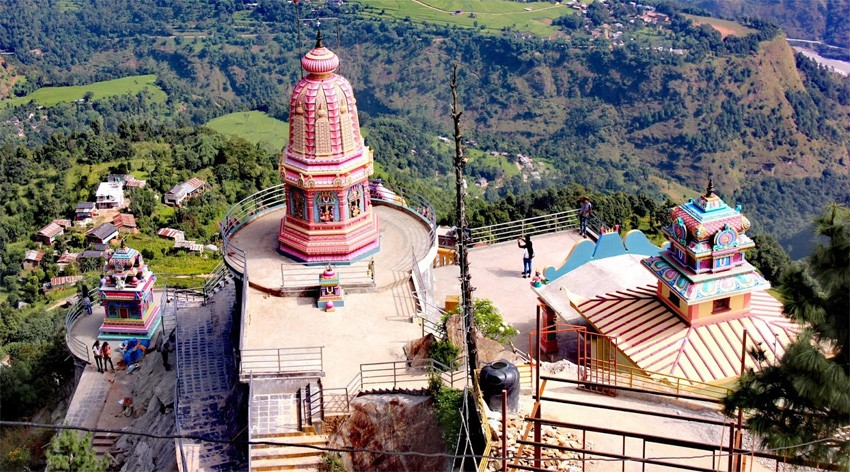

Kalika Bhagawati Temple, also known as Baglung Kalika Bhagawati Temple, is a significant Hindu temple located south-east of the town of Báglung in western Nepal.
It is situated on the southern banks of the Kali Gandaki River.
The presiding deity of the temple is Kalika (or Kali), one of the fiercest forms of Shakti, the consort of Shiva. Kalika is one of the main goddess for the Shaiva sect.
The temple courtyard has four entrances in each of the cardinal directions. The temple compound contains a sprawling collection of various other small temples dedicated to Shiva, Radha Krishna, Lakshmi Narayan and others.
Kalika Temple Located 5.5 km from the bazaar is the Kalika Temple. The temple's ambience gave us the feeling of serenity and tranquility.
The temple was built by Pratap Narayan and was renovated in the 1990s. It sits deep in the dense forest on the bank of the Kali Gandaki River.
People flock to Kalika Temple hoping to fulfill their wishes. Marriages are also performed inside the temple, and couples believe their married life will be blessed with happiness.
It's believed that if a person worships and sacrifices animals at the temple, then their wishes are fulfilled.
PANCHAKOT DHAM

Panchakot dham is situated in baglung municipality-6,Baglung. It is developing into a religious pilgrimage site which is situated on a hilltop – 13 km uphill from Baglung Bazaar.
The place has a fascinating view of hills, ridges, and Dhaulagiri Mountain. There is a Kali Temple near Panchakot Dham, which complements and provides additional value to the entire set up.
This site can be a catalyst to attract both Nepali and Indian pilgrims, especially those traveling to Muktinath.
Panchakot is 10 km far away from district headquarters.People of this area are also supporting to fulfill the dream of the sage.
First, this was just a dream of Muktinath Baba but as this is related to the development of Baglung, it has now become a dream of all Baglung residents.
Panchakot is made by symbolically merging the names of five different places (kots): Tatajalkot, Karikot, Majhkot, Raynaraynakot, and Sansaarkot.
These places are also related with the ancient kings. The kings established different religious places to worship divine energy and to get power from it.
KUSMA BUNGEE JUMP
Bungee Jumping in Nepal is one of the most popular adventurous activities. The world’s second-highest, most exciting and thrilling Bungee Jumping lies in the Kushma Parvat district of Nepal.
Along with the astounding panoramic views in the Kaligandaki gorge amidst the Annapurna and Dhaulagiri mountains, lies the Kushma’s suspension bridge from where the Bungee Jumping is into operation.
The bungee Jumping spot resides in the 520 m. long suspension bridge which connects Kushma of Parvat to the Balewa of Baglung. The total height of Bungee Jumping is 228 m., making it the world’s second-highest natural Bungee jumping paradise.
It is the tallest bungee Jumping of Nepal. Kushma Bungee Jump is popular as Asia’s highest natural bungee swing.Kushma Bungee Jumping is itself an adventurous activity.
In a long suspension bridge of 520 m, experiencing free fall with a rope swing that takes you to the Kaligandaki river gorge while soaring down from the clouds.
The major attribute of bungee jumping in Kushma is it is the highest bungee jump in Nepal
DHORPATAN HUNTING RESERVE
Dhorpatan Hunting Tour is the only hunting tour in Nepal which is legally allowed otherwise others are banned since many parts of the country are marked as the protected areas and Nepal is very true in making efforts to protect the environment and the wild lives at any cost.
DhThe landscape consists of forests, marshland (called ḍhor), and flat meadows (called pāṭan). The higher elevations remain snow-covered throughout the year. 58 vascular plants have been recorded in the reserve.
Flowering plants include 36 endemic species. 18 mammal species include snow leopard, musk deer, red panda, and blue sheep. 137 bird species include koklass pheasant, cheer pheasant, and impeyan pheasant; and two reptile species also occur.orpatan hunting reserve was established in 1987 and covers an area of 1325 km2 below the Dhaulagiri Himal of western Nepal.
Each year only few number of hunting operations are allowed when only certain species of animals are permitted to hunt.